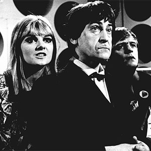

[Primary Navigation]

The First Doctor |
| The Second Doctor |
| The Third Doctor |
| The Fourth Doctor |
| The Fifth Doctor |
| The Sixth Doctor |
| The Seventh Doctor |
| The Eigth Doctor |
| The Ninth Doctor |
| The Tenth Doctor |
The Eleventh Doctor |
| The Twelfth Doctor |
The Second Doctor
Portrayed by Patrick Troughton
The Second Doctor is the second incarnation of the protagonist of the long-running BBC television science fiction series Doctor Who. He was portrayed by character actor Patrick Troughton.
The Second Doctor has been nicknamed the "Cosmic Hobo", as the impish Second Doctor appeared to be far more scruffy and childlike than his first incarnation.
Mercurial, clever, and always a few steps ahead of his enemies, at times he could be a calculating schemer who would not only manipulate people for the greater good but act like a bumbling fool in order to have others underestimate his true abilities. Sometimes this appears simply as a joke, such as in The Tomb of the Cybermen, where he finishes the archaeologists' calculations behind their backs, but at other times, it seems much darker. In The Evil of the Daleks he coldly manipulates Jamie into trying to rescue Victoria (thus setting in motion the Human Factor tests) and is unsympathetic when Edward Waterfield tries to apologise for his collaboration with the Daleks. Despite the bluster and tendency to panic when events got out of control, the Second Doctor always acted heroically and morally in his desire to help the oppressed.
This Doctor is associated with the catchphrases "Oh my giddy aunt!" and "When I say run, run!", and is noted for playing the recorder. In early stories he also demonstrates a fondness for hats and other types of headgear, mainly sporting a distinctive stovepipe hat when outdoors.